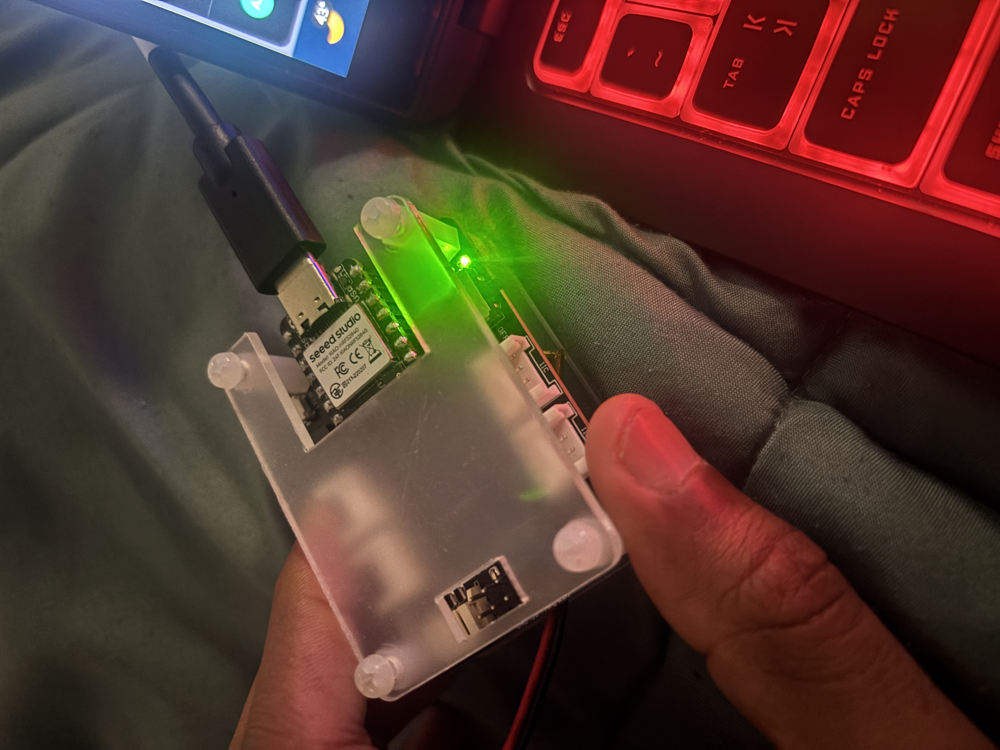
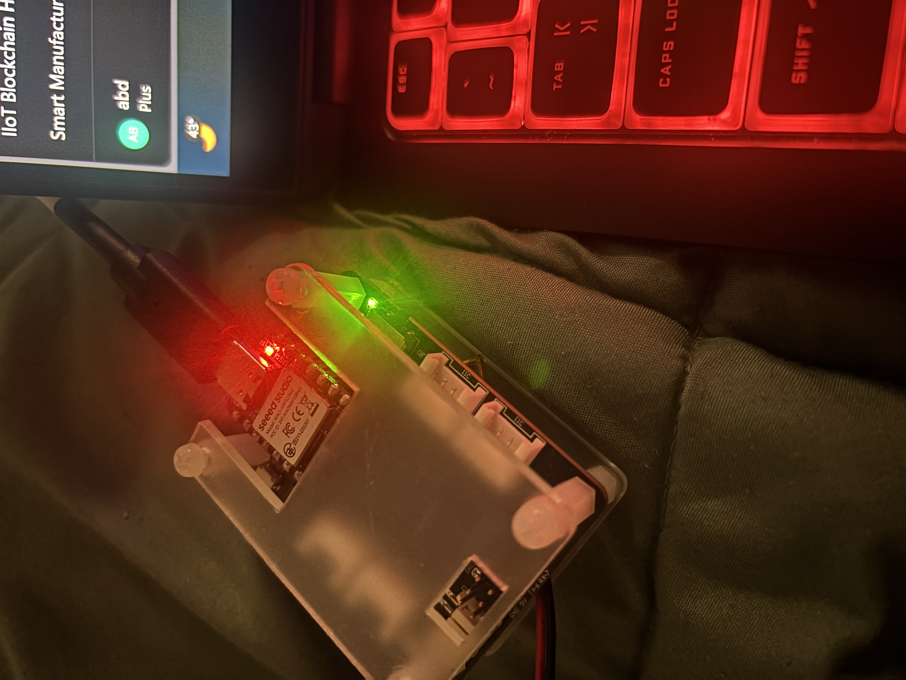

Lab Objective
This lab samples IMU + temperature data, timestamps using RTC, and compares power consumption in two operating modes: Mode 1 (no SD logging) and Mode 2 (SD logging enabled).
Operating Modes (Required)
- Mode 1 (No SD Logging): Sample IMU + temperature at fixed frequency (e.g., 100 Hz), RTC timestamp, OLED shows mode.
- Mode 2 (SD Logging Enabled): Same sampling frequency, RTC timestamp, data written to SD card, OLED shows mode.
- Data format:
hr,min,sec,ax,ay,az,gx,gy,gz,temp
Code (Open on GitHub)
- BLE LED Test: LEDNRF.ino
- Mode 1 + Mode 2: MODE1_AND_MODE2.ino
Part A: BLE LED Test (Proof)
Write 1 in BLE app → Green LED. Write 0 → Red LED.






(All BLE LED proof photos are included above.)
Part B: Mode 1 & Mode 2 (Proof)


Mode 1: sampling only (no SD writes)
Mode 2: sampling + SD logging (writes to SD)
USB Power Meter (Photos + Videos)


Video Proof (Side-by-side, audio disabled)
Videos are embedded with muted so audio is OFF by default.
Power Measurement Results & Calculations
Raw Measurements
- Mode 1: I(A)=0.024,0.028,0.032; V(V)=5.105,5.097,5.080
- Mode 2: I(A)=0.044,0.048,0.052; V(V)=5.105,5.097,5.080
Averages
- Vusb,avg = (5.105+5.097+5.080)/3 = 5.094 V
- Iusb,avg (Mode 1) = (0.024+0.028+0.032)/3 = 0.028 A = 28 mA
- Iusb,avg (Mode 2) = (0.044+0.048+0.052)/3 = 0.048 A = 48 mA
USB Power
- Pusb(Mode 1) = 5.094 × 0.028 = 0.143 W
- Pusb(Mode 2) = 5.094 × 0.048 = 0.245 W
Battery Runtime Estimate (500 mAh @ 3.7V, η = 0.85)
- Denominator = 3.7 × 0.85 = 3.145
- Ibatt(Mode 1) = 0.1426 / 3.145 = 0.04535 A = 45.35 mA
- Ibatt(Mode 2) = 0.2445 / 3.145 = 0.07775 A = 77.75 mA
- Runtime(Mode 1) = 0.5 / 0.04535 = 11.02 hours
- Runtime(Mode 2) = 0.5 / 0.07775 = 6.43 hours
SD Logging Overhead (Mode2 − Mode1)
- ΔI = 0.048 − 0.028 = 0.020 A = 20 mA
- ΔP = 0.245 − 0.143 = 0.102 W
- Δt = 6.43 − 11.02 = −4.59 hours
Final Results Table
| Mode | Vusb_avg (V) | Iusb_avg (mA) | Pusb_avg (W) | Ibatt (mA) | Runtime (hours) |
|---|---|---|---|---|---|
| Mode 1 (Sample Only) | 5.094 | 28 | 0.143 | 45.35 | 11.02 |
| Mode 2 (Sample + SD Log) | 5.094 | 48 | 0.245 | 77.75 | 6.43 |
| Overhead (Mode2 − Mode1) | — | +20 | +0.102 | +32.40 | −4.59 |
Discussion
Mode 2 draws higher current because SD card writing/flush operations are bursty and add extra activity. Compared to Mode 1, SD logging increases average USB current by 20 mA and average USB power by ~0.102 W, increasing estimated battery current from 45.35 mA to 77.75 mA. Therefore, estimated runtime drops from ~11.0 hours to ~6.4 hours.
SD Card Log File (CSV)
If CSV opens from GitHub Pages it may download. So this link opens it in GitHub viewer:
All Uploaded Proof Photos (Complete)
This section contains every image filename you mentioned, so nothing is missing.